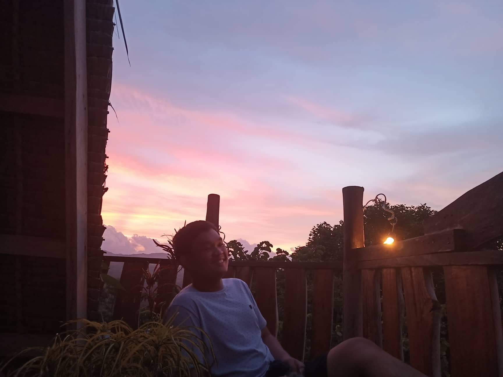

Maples River
Pogonsili Aguilar, Pangsinan
Maples is a river that is surrounded by beautiful mountains and it is a good place to cool off when it is in summer season,

A guide to the hidden gems of Pangasinan that is worth your visit.
As a person who was raised in Pangansinan, I've seen my own share of 'beautiful places.' However, some are yet to be found by the tourists and are only known to locals.

Pogonsili Aguilar, Pangsinan
Maples is a river that is surrounded by beautiful mountains and it is a good place to cool off when it is in summer season,
Mapita Aguilar, Pangsinan
Viewdeck is known for it's beautiful mountain views and when driving in the 'daang katutubo' it further elevates the peaceful drive.

Mangatarem, Pangsinan
Manleluag Spring is open for public to experience the natural hot spring pools.